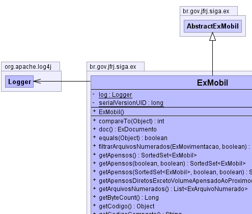
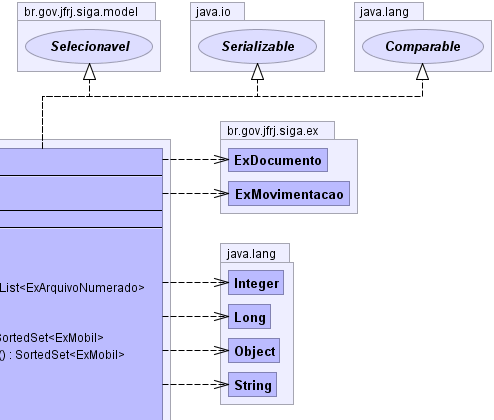
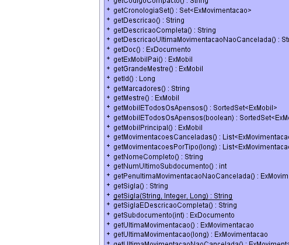
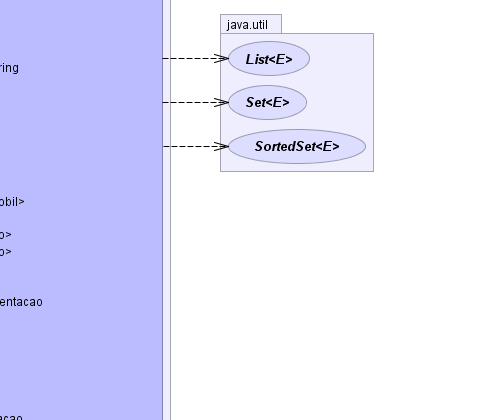
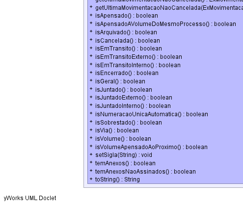
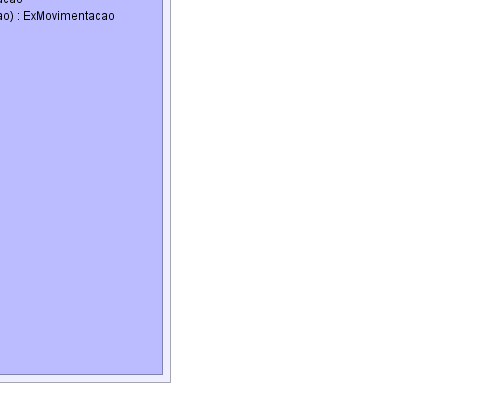

br.gov.jfrj.siga.ex.AbstractExMobil
br.gov.jfrj.siga.ex.ExMobil
br.gov.jfrj.siga.ex.AbstractExMobil
br.gov.jfrj.siga.ex.ExMobil
|
|||||||||
| PREV CLASS NEXT CLASS | FRAMES NO FRAMES | ||||||||
| SUMMARY: NESTED | FIELD | CONSTR | METHOD | DETAIL: FIELD | CONSTR | METHOD | ||||||||
java.lang.Object
public class ExMobil
|  |  |
|  |  |
|  |  |
| Nested Class Summary | |
|---|---|
private class |
ExMobil.CronologiaComparator
|
| Field Summary | |
|---|---|
private static org.apache.log4j.Logger |
log
|
private static long |
serialVersionUID
|
| Constructor Summary | |
|---|---|
ExMobil()
|
|
| Method Summary | |
|---|---|
int |
compareTo(java.lang.Object o)
|
ExDocumento |
doc()
Retorna o documento relacionado ao Mobil. |
boolean |
equals(java.lang.Object obj)
|
java.util.List<ExArquivoNumerado> |
filtrarArquivosNumerados(ExMovimentacao mov,
boolean bCompleto)
|
java.util.SortedSet<ExMobil> |
getApensos()
|
java.util.SortedSet<ExMobil> |
getApensos(boolean omitirApensosIndiretos,
boolean omitirVolumesApensadosAosProximos)
|
java.util.SortedSet<ExMobil> |
getApensos(java.util.SortedSet<ExMobil> set,
boolean omitirApensosIndiretos,
boolean omitirVolumesApensadosAosProximos)
|
java.util.SortedSet<ExMobil> |
getApensosDiretosExcetoVolumeApensadoAoProximo()
|
java.util.List<ExArquivoNumerado> |
getArquivosNumerados()
|
java.lang.Long |
getByteCount()
|
java.lang.Object |
getCodigo()
Retorna a sigla. |
java.lang.String |
getCodigoCompacto()
Retorna a sigla sem os sinais "-" e "/". |
java.util.Set<ExMovimentacao> |
getCronologiaSet()
|
java.lang.String |
getDescricao()
Retorna a descrição do documento relacionado ao Mobil como um link em html. |
java.lang.String |
getDescricaoCompleta()
Retorna o número de sequência, a descrição de tipo de mobil mais a descrição do tipo de destinação. |
java.lang.String |
getDescricaoUltimaMovimentacaoNaoCancelada()
Retorna a descrição da última movimentação não cancelada. |
ExDocumento |
getDoc()
Retorna o documento relacionado ao Mobil atual. |
ExMobil |
getExMobilPai()
Retorna o Mobil pai do Mobil atual. |
ExMobil |
getGrandeMestre()
Se o mobil em questão for o grande mestre de uma cadeia de apensação, ele deve retornar "this". |
java.lang.Long |
getId()
|
java.lang.String |
getMarcadores()
Retorna a descrição dos marcadores relacionado ao Mobil atual. |
ExMobil |
getMestre()
Retorna o Mobil Mestre relacionado ao Mobil atual. |
java.util.SortedSet<ExMobil> |
getMobilETodosOsApensos()
|
java.util.SortedSet<ExMobil> |
getMobilETodosOsApensos(boolean fOmitirVolumesApensadosAosProximos)
|
ExMobil |
getMobilPrincipal()
Se esse documento estiver juntado, retorna o pai Senão, retorna null |
java.util.List<ExMovimentacao> |
getMovimentacoesCanceladas()
Retorna as movimentações de um Mobil que estão canceladas. |
java.util.List<ExMovimentacao> |
getMovimentacoesPorTipo(long tpMov)
Retorna as movimentações de um Mobil de acordo com um tipo específico de movimentação. |
java.lang.String |
getNomeCompleto()
Retorna a descrição do tipo de documento mais o código do documento e a descrição do documento. |
int |
getNumUltimoSubdocumento()
Retorna o último documento que é filho do Mobil atual. |
ExMovimentacao |
getPenultimaMovimentacaoNaoCancelada()
Retorna A penúltima movimentação não cancelada de um Mobil. |
java.lang.String |
getSigla()
Retorna o código do documento mais o número da via ou do volume. |
static java.lang.String |
getSigla(java.lang.String codigoDocumento,
java.lang.Integer numSequencia,
java.lang.Long idTipoMobil)
Retorna o código do documento mais o número da via ou do volume. |
java.lang.String |
getSiglaEDescricaoCompleta()
Retorna a sigla mais a descrição do documento relacionado ao Mobil. |
ExDocumento |
getSubdocumento(int numSubdocumento)
Retorna um documento filho do Mobil atual de acordo com o número de sequência informado. |
ExMovimentacao |
getUltimaMovimentacao()
Retorna A última movimentação de um Mobil. |
ExMovimentacao |
getUltimaMovimentacao(long tpMov)
Retorna A última movimentação de um Mobil de acordo com um tipo específico de movimentação. |
ExMovimentacao |
getUltimaMovimentacaoNaoCancelada()
Retorna A última movimentação não cancelada de um mobil, com base nos parâmetros de uma outra movimentação. |
ExMovimentacao |
getUltimaMovimentacaoNaoCancelada(ExMovimentacao movParam)
Retorna A última movimentação não cancelada de um Mobil. |
boolean |
isApensado()
Verifica se um Mobil está apensado a outro mobil. |
boolean |
isApensadoAVolumeDoMesmoProcesso()
Verifica se um Mobil do tipo Volume está Apensado a outro Mobil do mesmo Processo. |
boolean |
isArquivado()
Uma via está arquivada se: -existir uma movimentação não cancelada e o estado desta movimentação for "Arquivado Corrente", "Arquivado Intermediário" ou "Arquivado Permanente" |
boolean |
isCancelada()
Verifica se um Mobil está Cancelado. |
boolean |
isEmTransito()
Verifica se um Mobil está em trânsito. |
boolean |
isEmTransitoExterno()
Verifica se um Mobil está em trânsito externo. |
boolean |
isEmTransitoInterno()
Verifica se um Mobil está em trânsito interno. |
boolean |
isEncerrado()
Verifica se um Mobil está encerrado. |
boolean |
isGeral()
Verifica se um Mobil é do tipo Geral. |
boolean |
isJuntado()
Verifica se um Mobil está juntado a outro. |
boolean |
isJuntadoExterno()
Verifica se um Mobil está juntado a outro mobil do tipo externo. |
boolean |
isJuntadoInterno()
Verifica se um Mobil está juntado a outro mobil do tipo interno. |
boolean |
isNumeracaoUnicaAutomatica()
|
boolean |
isSobrestado()
Verifica se uma mobil está sobrestado |
boolean |
isVia()
Verifica se um Mobil é do tipo Via. |
boolean |
isVolume()
Verifica se um Mobil é do tipo Volume. |
boolean |
isVolumeApensadoAoProximo()
Verifica se um Mobil do tipo Volume está Apensado ao próximo Mobil. |
void |
setSigla(java.lang.String sigla)
Informa a sigla de um mobil. |
boolean |
temAnexos()
Verifica se um Mobil possui arquivos anexados |
boolean |
temAnexosNaoAssinados()
Verifica se um Mobil possui Anexos Pendentes de Assinatura |
java.lang.String |
toString()
|
| Methods inherited from class br.gov.jfrj.siga.ex.AbstractExMobil |
|---|
getExDocumento, getExDocumentoFilhoSet, getExMarcaSet, getExMovimentacaoReferenciaSet, getExMovimentacaoSet, getExTipoMobil, getIdMobil, getNumSequencia, setExDocumento, setExDocumentoFilhoSet, setExMarcaSet, setExMovimentacaoReferenciaSet, setExMovimentacaoSet, setExTipoMobil, setIdMobil, setNumSequencia |
| Methods inherited from class java.lang.Object |
|---|
clone, finalize, getClass, hashCode, notify, notifyAll, wait, wait, wait |
| Field Detail |
|---|
private static final long serialVersionUID
private static final org.apache.log4j.Logger log
| Constructor Detail |
|---|
public ExMobil()
| Method Detail |
|---|
public ExMovimentacao getUltimaMovimentacao()
public ExMovimentacao getUltimaMovimentacao(long tpMov)
tpMov -
public ExMovimentacao getUltimaMovimentacaoNaoCancelada()
public ExMovimentacao getUltimaMovimentacaoNaoCancelada(ExMovimentacao movParam)
public ExMovimentacao getPenultimaMovimentacaoNaoCancelada()
public java.util.List<ExMovimentacao> getMovimentacoesPorTipo(long tpMov)
tpMov -
public boolean isGeral()
public boolean isVia()
public boolean isVolume()
public boolean isCancelada()
public java.lang.String getDescricao()
getDescricao in interface Selecionavelpublic java.lang.String getSiglaEDescricaoCompleta()
public java.lang.String getNomeCompleto()
public java.lang.String getDescricaoCompleta()
public void setSigla(java.lang.String sigla)
setSigla in interface Selecionavelsigla - public java.lang.String getSigla()
getSigla in interface Selecionavel
public static java.lang.String getSigla(java.lang.String codigoDocumento,
java.lang.Integer numSequencia,
java.lang.Long idTipoMobil)
public ExMobil getMobilPrincipal()
public java.lang.String getCodigoCompacto()
public java.lang.Object getCodigo()
public ExDocumento doc()
public boolean isArquivado()
public boolean isSobrestado()
public boolean isEmTransito()
public boolean isEmTransitoInterno()
public boolean isEmTransitoExterno()
public boolean isJuntado()
public boolean isJuntadoInterno()
public boolean isJuntadoExterno()
public boolean isApensado()
public ExMobil getExMobilPai()
public java.lang.Long getId()
getId in interface Selecionavelpublic java.lang.String getDescricaoUltimaMovimentacaoNaoCancelada()
public ExDocumento getDoc()
public java.util.Set<ExMovimentacao> getCronologiaSet()
public int compareTo(java.lang.Object o)
compareTo in interface java.lang.Comparablepublic java.util.List<ExArquivoNumerado> getArquivosNumerados()
public java.lang.String getMarcadores()
public ExMobil getMestre()
public ExMobil getGrandeMestre()
public java.util.SortedSet<ExMobil> getApensos()
public java.util.SortedSet<ExMobil> getApensosDiretosExcetoVolumeApensadoAoProximo()
public java.util.SortedSet<ExMobil> getApensos(boolean omitirApensosIndiretos,
boolean omitirVolumesApensadosAosProximos)
public java.util.SortedSet<ExMobil> getApensos(java.util.SortedSet<ExMobil> set,
boolean omitirApensosIndiretos,
boolean omitirVolumesApensadosAosProximos)
public java.lang.String toString()
toString in class java.lang.Objectpublic boolean equals(java.lang.Object obj)
equals in class java.lang.Objectpublic java.util.SortedSet<ExMobil> getMobilETodosOsApensos()
public java.util.SortedSet<ExMobil> getMobilETodosOsApensos(boolean fOmitirVolumesApensadosAosProximos)
public boolean isEncerrado()
public boolean isVolumeApensadoAoProximo()
public boolean temAnexosNaoAssinados()
public boolean temAnexos()
public boolean isApensadoAVolumeDoMesmoProcesso()
public int getNumUltimoSubdocumento()
public ExDocumento getSubdocumento(int numSubdocumento)
numSubdocumento -
public boolean isNumeracaoUnicaAutomatica()
public java.util.List<ExArquivoNumerado> filtrarArquivosNumerados(ExMovimentacao mov,
boolean bCompleto)
public java.lang.Long getByteCount()
public java.util.List<ExMovimentacao> getMovimentacoesCanceladas()
|
|||||||||
| PREV CLASS NEXT CLASS | FRAMES NO FRAMES | ||||||||
| SUMMARY: NESTED | FIELD | CONSTR | METHOD | DETAIL: FIELD | CONSTR | METHOD | ||||||||